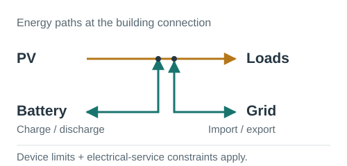
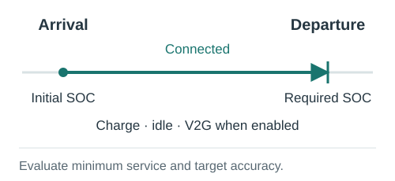

Features and configuration
Start with the first simulation, then choose the conditions your controller should handle. Features are configured in the schema or environment arguments; the same simulation loop runs the episode.
Buildings, thermal systems and storage
A community contains buildings with electricity demand and optional cooling, heating and domestic-hot-water systems. Thermal storage shifts when energy is supplied; dynamic-temperature building models allow HVAC control to affect indoor temperature. Comfort and outage indicators report the resulting service.
Choose devices under each building’s schema entry and enable their actions. Device configuration, action meanings and comfort KPIs provide the details.
Photovoltaics and batteries

PV can use a normalized per-kW generation profile or measured generation in
kWh/step with generation_mode="absolute". Stationary batteries have capacity,
SOC, charging/discharging power, efficiency and degradation parameters. Positive
storage actions charge and negative actions discharge; physical and connection
limits determine the applied energy.
See PV configuration, the unit contract and storage actions.
Electric vehicles and chargers

Charger schedules identify connected and incoming EVs, arrival/departure times and required departure SOC. Charger-centric actions control the connected EV; negative actions permit V2G when discharging power is available. EV and charger identities remain separate so different vehicles can use the same charger.
Configure chargers and
EV definitions. Read minimum departure
service and symmetric target accuracy separately in the scorecard.
A runnable public example is citylearn_challenge_2022_phase_all_plus_evs.
Flexible appliances
A normalized cycle catalogue describes consumption over a cycle. A separate schedule gives the earliest start, latest start and completion deadline. The action requests a start; the simulator checks that the complete cycle fits the window and episode before applying it. Completion, missed cycles and delay are recorded as service indicators.
See configuration and start logic. The public EV example above includes flexible-appliance configuration.
Escalators
The flat interface supports an aggregate standby/slow/normal escalator model. A normalized action selects one of those states; demand and availability inputs determine passenger-service indicators and energy use. This is a state-and-demand model, not an individual passenger or queue simulation.
Provide your own schedule using the escalator schema. The actions guide explains state thresholds.
Electrical-service and phase limits
Buildings can have total and per-phase active-power import/export limits. Storage and chargers can be assigned phase connections. The simulator records requested, limited and applied actions alongside headroom and phase power, allowing a study to distinguish an excessive request from a residual exceedance after constraint handling.
Configure buildings.<name>.electrical_service using the
schema reference. Start with
citylearn_three_phase_electrical_service_demo. These are active-power
connection constraints; they do not calculate feeder voltage or AC power flow.
See electrical KPIs.
Local energy sharing and settlement
Enable community_market.enabled to match same-timestep surplus and demand
among members. Local prices and importer weights determine financial allocation;
exports expose settled costs, the grid-only counterfactual and savings for each
member and the community. Settlement values the recorded physical trajectory.
Configure the community market. Residual grid exports currently receive zero remuneration. Local settlement is within a community; multi-community reporting is described below.
Demand-response requests
A requests file supplies DSO/TSO activation windows, direction, target power,
payment, tolerance and shortfall penalty. Use entity mode and enable the
entity_demand_response observation bundle to expose active requests.
Controllers respond through the existing storage, EV and flexible-load actions.
The baseline is the mean net power over the configured pre-event history window,
frozen for that request. Delivered energy, credited response and penalized
shortfall are separate quantities. See the request format and baseline
and settlement KPIs.
Use citylearn_challenge_2022_phase_all_demand_response for a public example.
Changing members and assets
With interface="entity" and topology_mode="dynamic", scheduled events add or
remove members, chargers, PV, storage and flexible appliances. Stable identifiers,
lifecycle metadata and refreshed spaces/specifications let controllers track
these changes. Reset reconstructs the initial scenario for the next episode.
See topology events and
entity specifications.
Public examples include citylearn_three_phase_dynamic_topology_demo and
citylearn_three_phase_dynamic_asset_changes_demo_15s_parquet.
Data and equipment failures
Optional robustness events alter controller-visible measurements or forecasts, drop/delay/corrupt actions, or make asset channels unavailable. The event file sets targets, time windows and perturbations. Measurement corruption leaves the physical state intact; action-channel changes can affect actual consumption.
See the robustness guide for all supported modes and
the distinction between missing values and physical zero. The public example is
citylearn_challenge_2022_phase_all_robustness.
Time resolution and dataset formats
Use hourly or sub-hourly scenarios, including 15-minute, 5-minute, 1-minute and
15-second data. Match the schema timestep to the input cadence and supply energy
columns in kWh/step. Changing the timestep alone does not create measured
high-frequency detail from hourly data.
CSV and Parquet use the same column contract; Parquet is useful for large datasets. See the dataset guide and unit contract. Begin large simulations with a short window.
Flat vectors and entity tables
Flat mode provides vectors per building, or a combined vector in central-agent mode. Entity mode provides identified tables, features, masks and relational edges. Observation bundles select forecasts, electrical headroom, service deadlines and action feedback. These inputs can be used by graph or Transformer controllers supplied by the researcher.
The interface guide, observation reference and action reference define the contracts.
Multiple communities
MultiCommunityEnv steps independent communities in lockstep and reports local
and portfolio results. Children share timestep, episode length, interface and
central-agent mode. Each keeps its own physical state, DR requests and settlement.
The wrapper aggregates results; it does not physically transfer energy between
communities or optimize inter-community dispatch.
The multi-community guide includes a complete example using available public datasets.
Controllers, rewards and repeated actions
Use the built-in business-as-usual and rule-based agents, implement a custom controller, or integrate a learning algorithm. A reward guides training; KPIs evaluate the completed run. They need not optimize the same quantity. Check each controller/wrapper’s supported interface; classic RBC and standard RL wrappers use flat mode.
step_many() repeats an action while still advancing physics and services at
every internal timestep. It returns accumulated rewards and the executed step
count. See simulation options and the
controller tutorials.
Evaluation, exports and performance
evaluate_v2() provides structured building/community KPIs. The
scorecard introduces a compact selection; the
KPI reference and naming catalogue
cover the wider output. Normalized ratios accompany raw energy, cost and service
quantities rather than replacing them.
Use render_mode="none" during training, or "end" for episode-end exports.
Windowed loading, shared input caches, Parquet and selectable observation bundles
help control runtime and memory costs. See export options,
CityLearn UI and the
developer guide for validation and profiling.